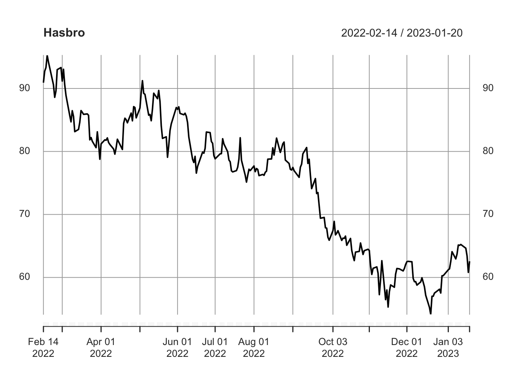
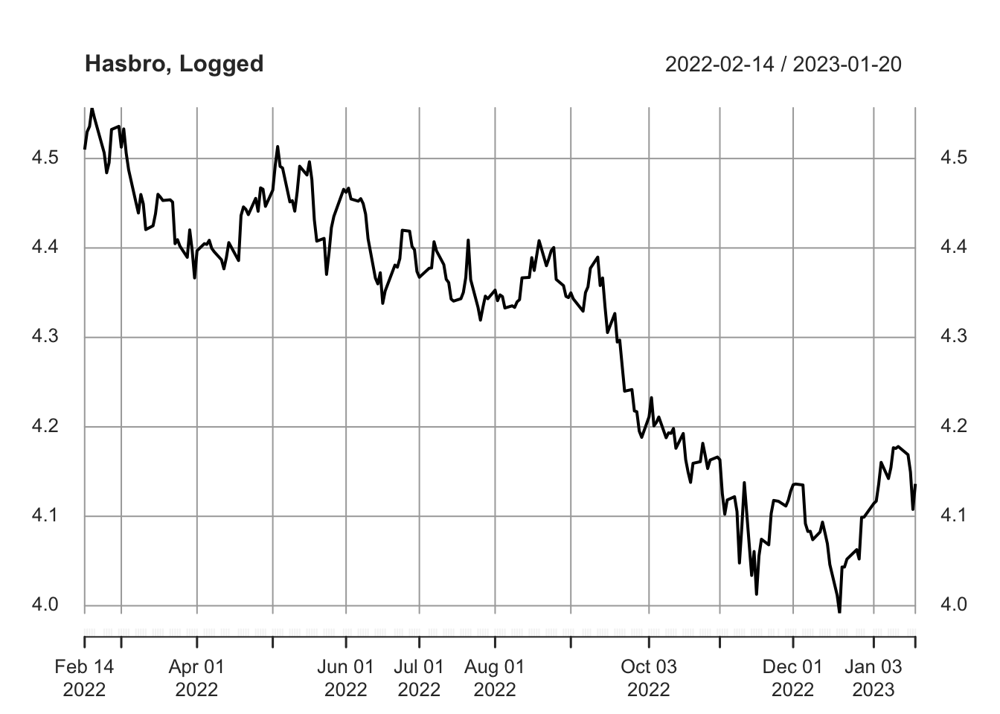
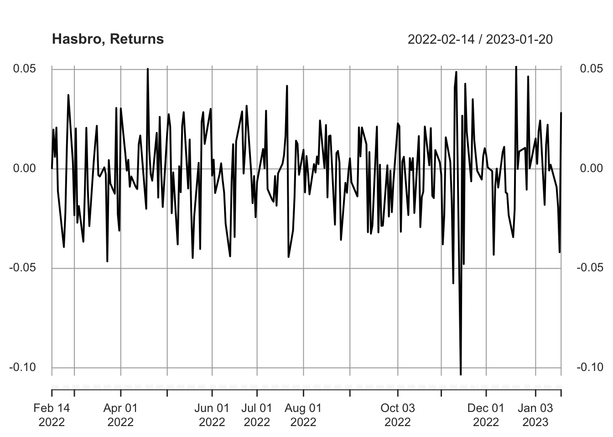
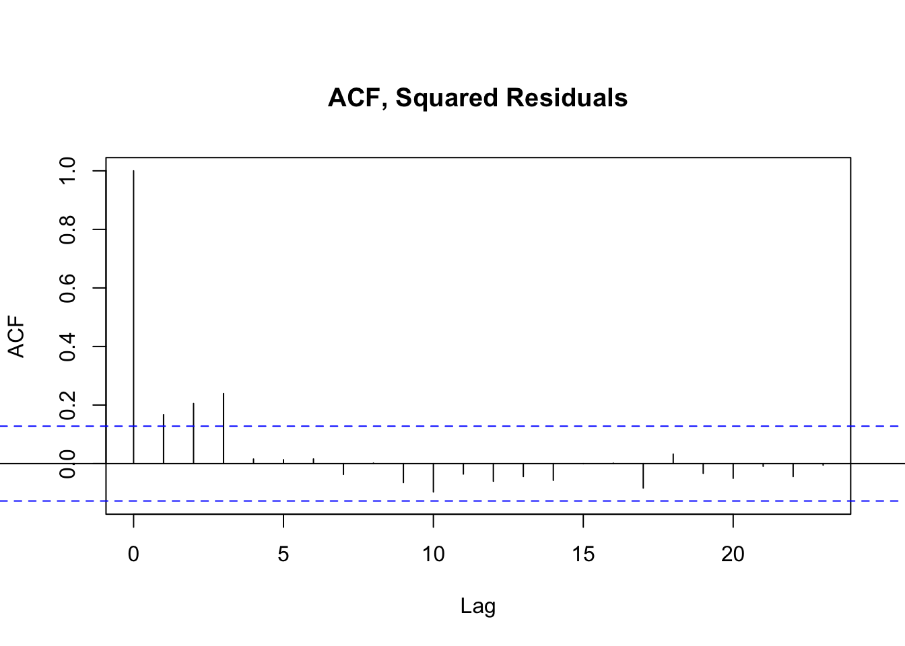
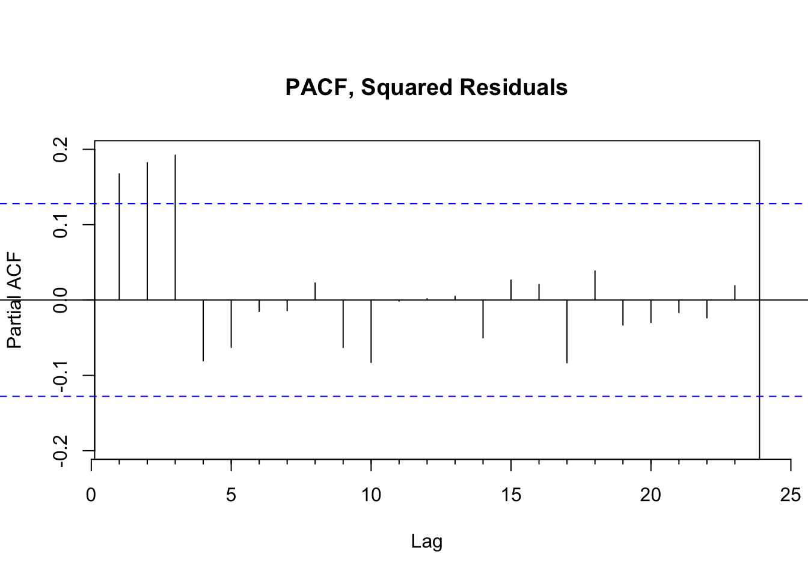

Financial Time Series Models
Thus far, we’ve explored two models for predicting Hasbro’s stock price. Using an ARMA model, we predicted the daily value of the stock based on previous values. While simple, this method did not provide much of a boost over benchmark methods. We then implemented a more complex ARIMAX model, adding independent variables that we hypothesized would further inform the model’s predictive capabilities. These variables included the S&P500’s performance, Hasbro’s trade volume, and the weekly price of Magic the Gathering products, one of Hasbro’s most profitable and growing product lines. The results showed improvement over the ARIMA model, but still failed to capture all of the volatility reflected in Hasbro’s stock price in a tumultuous year.

To further compare the ARIMAX model to other options, we pivot back to considering the daily Hasbro stock price and implement a GARCH model to capture the volatility previously not represented by the original ARMA model.
Revisiting Hasbro Stock Prices
We briefly revisit the plot of Hasbro’s closing stock price over the year for which we have Magic the Gathering secondary market data. We’re reminded of the tumultuous year it represents, with Hasbro’s stock losing roughly one-third of its market value in this window.
Given the swing in values and magnitude of the range, we also take the log of the stock price to use for modeling.


Investigating the Returns & Model Residuals
In viewing the returns, there is a fairly centered mean around zero. There is also some clustered volatility in November of 2022, precisely the window in which Bank of America published its findings on how Hasbro was negatively impacting the value of Magic the Gathering. Given that the data does not have the appearance of simply Gaussian white noise, there is an opportunity for further modeling to improve the forecasting results.

With this in mind, we recreate the original ARIMA(0,1,0) model from the last time working with daily Hasbro stock prices. We then extract the residuals, or the remaining unexplained variance, and model only the residuals using a GARCH model. To determine the parameters of the GARCH model, we evaluate the squared residuals using the same PACF and ACF techniques as before.


GARCH Model
From viewing the ACF and PACF of the squared residuals, it’s clear in both instances that the first few lags remain correlated at a statistically significant level. This suggests that a GARCH model will be most helpful, with parameters somewhere between 1 and 3. We iteratively loop through each combination to find the optimal values. After testing for models that minimize AIC, we note that GARCH(1,1) is both the simplest and most effective option.
Model Estimates and Error Analysis
| Estimate | Std. Error | T-value | p-value | |
|---|---|---|---|---|
| mu | -0.0015 | 0.0013 | -1.611 | 0.2457 |
| omega | 0.0001 | 0.0000 | 2.194 | 0.0283 |
| alpha1 | 0.1768 | 0.0782 | 2.147 | 0.0318 |
| beta1 | 0.4599 | 0.2027 | 2.269 | 0.0233 |
After testing the GARCH(1,1) model against other options with slightly worse AIC values, the former does indeed seem most suited for estimating the remaining residuals. We observe that the GARCH(1,1) model performs best, with all three coefficients reported as statistically significant with a p-value of 0.05.
Standardized Residuals Tests
| Statistic | p-Value | |||
|---|---|---|---|---|
| Jarque-Bera Test | R | Chi^2 | 2.732 | 0.2551 |
| Shapiro-Wilk Test | R | W | 0.993 | 0.3973 |
| Ljung-Box Test | R | Q(10) | 7.701 | 0.6579 |
| Ljung-Box Test | R | Q(15) | 10.62 | 0.7789 |
| Ljung-Box Test | R | Q(20) | 13.05 | 0.8747 |
| Ljung-Box Test | R^2 | Q(10) | 8.753 | 0.5729 |
| Ljung-Box Test | R^2 | Q(15) | 10.13 | 0.8111 |
| Ljung-Box Test | R^2 | Q(20) | 24.54 | 0.2195 |
| LM Arch Test | R | TR^2 | 7.667 | 0.8105 |
We also observe that the Ljung-Box Test reports non-significant p-values for each value. This is what we would hope to see given that the null hypothesis of the Ljung-Box Test is that the model does not show a lack of fit. We cannot reject this null hypothesis and thus proceed with the chosen model.
Final Model & Equation
Building on the original random walk model previously established, this process has shown that adding a GARCH model of the remaining residuals better captures the trends within the time series. The final model is thus an ARIMA(0,1,0) + GARCH(1,1).This model can also be written mathematically as:
\(\phi(B) x_t = \delta + \theta(B) y_t\),
where \(\phi(B)= 1\); and \(\theta(B)= 1\); and \(\delta = -0.0015\)
\(y_t=\sigma_t \epsilon_t\)
\(\sigma ^2 = 0.0001 + 0.1768(y_{t-1})^2 + 0.4599 \sigma_{t-1}^2\)